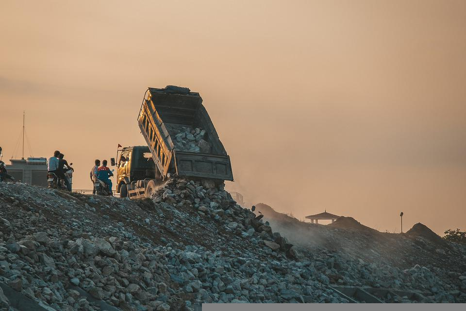

Increasing volumes of waste are being generated as the global population and living standards rise. It's therefore our responsibilities to address these issues. Waste is bringing various problems to our environment and putting the public's health at risk.
In fact, poorly managed waste is contaminating the world’s oceans, clogging drains and causing flooding, transmitting diseases, increasing respiratory problems from burning, harming animals that consume waste unknowingly, and affecting economic development such as through tourism. Without urgent action, these issues will only continue to worsen.
European Environmental Agency:
"Poor waste management contributes to climate change and air pollution, and directly affects many ecosystems and species. Landfills, considered the last resort in the waste hierarchy, release methane, a very powerful greenhouse gas linked to climate change."
Earth Day Network:
"A recent study found that of the 6.3 billion metric tons of plastic waste that has been produced, only 9% of that plastic waste had been recycled. In 2017, for instance, the Environmental Protection Agency calculated that the total generation of municipal solid waste in the United States just that year was 267.8 million tons. Compared with 2015 levels, it was a 5.7 million increase"
"The more emissions that we produce due to how much trash we generate, affects us long term. One can develop diseases such as asthma, birth defects, cancer, cardiovascular disease, childhood cancer, COPD, infectious diseases, low birth weight, and preterm delivery. Bacteria, vermin and insects can also be added to the problem that trash causes."